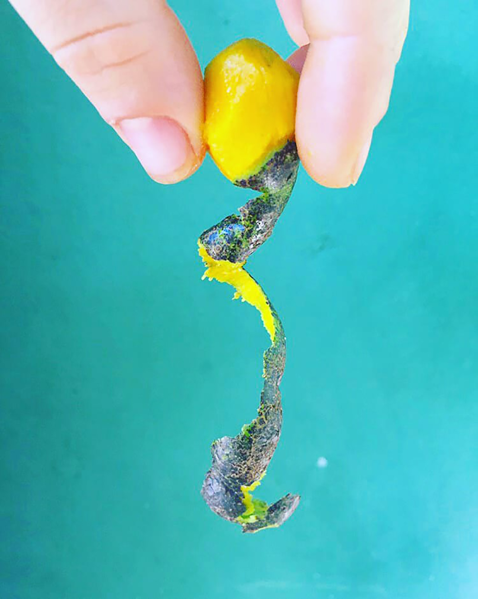
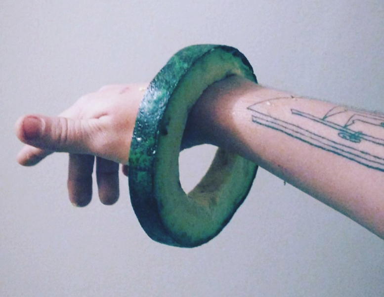
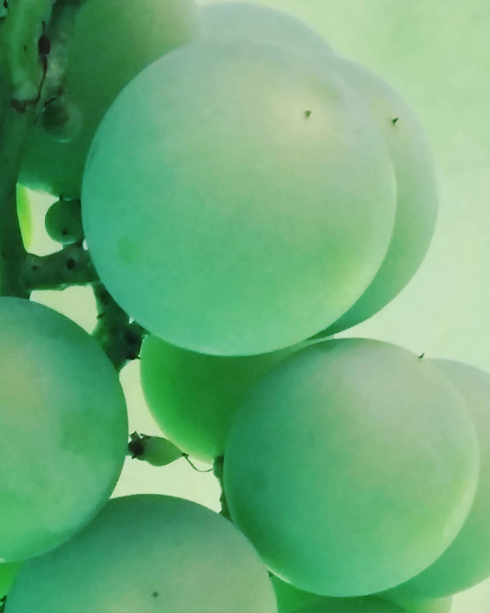
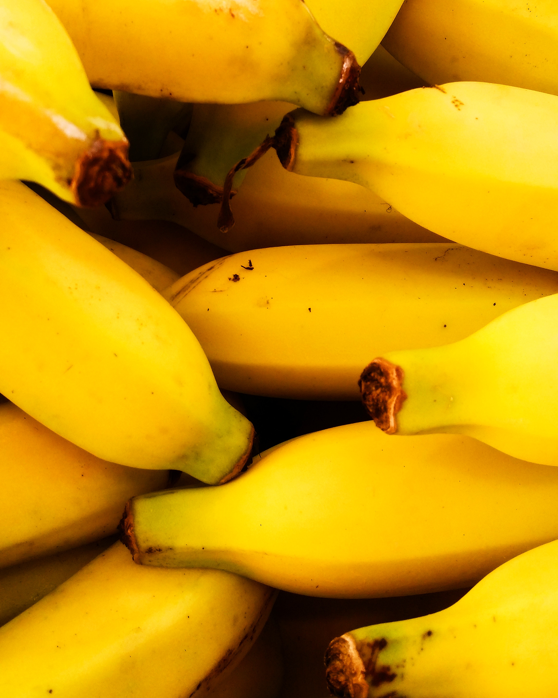
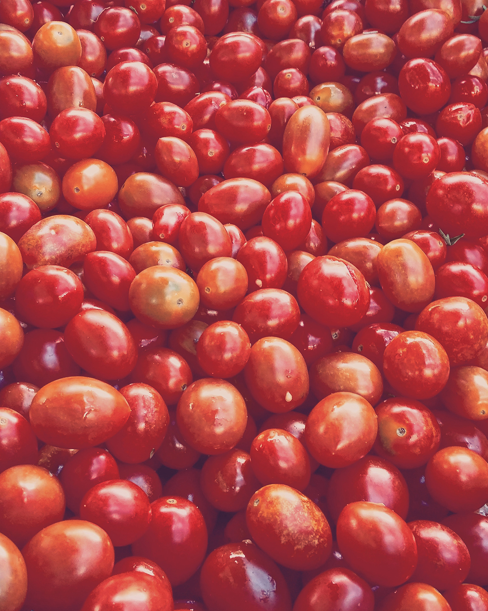

//.
reconstruindo uma cozinha absurdamente deliciosa sem ingredientes de origem animal.
A Fisalis é um universo livremente explorável, sem amarras de estilo de cozinha ou vertentes que se prender.
Experimenta sensações, camadas de sabores e contraste de texturas.
\\___
segunda
sexta
domingo
11h - 22h
.//
sábado
18h - 22h
fifi usa
ingredientes não transgênicos, de produtoras orgânicas locais & agroecológicas

mistura\\



//mistério